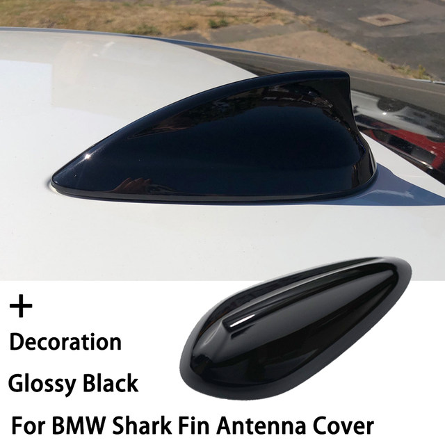
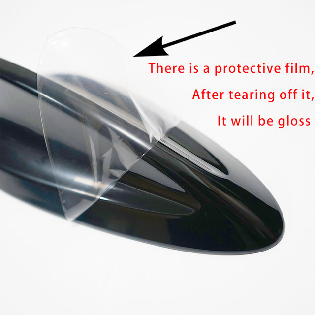
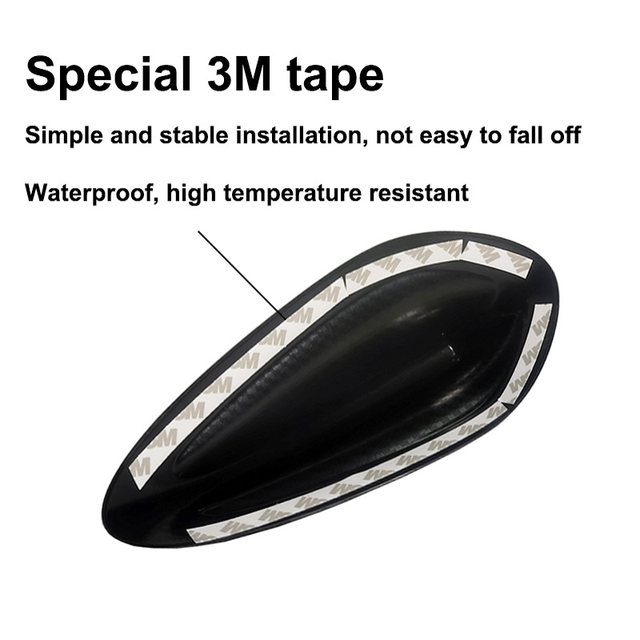
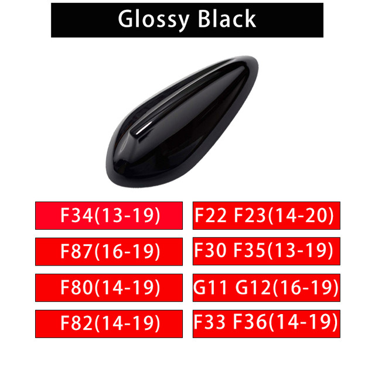
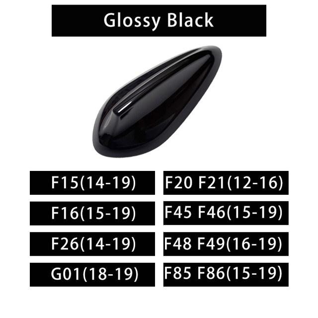

Feature:
*Condition: 100% Brand New
*Material:High Quality Flexible Automotive Grade PC plastic
*Designed for your model, 1:1 original car mold opening,match well.
*Attached with quality adhesive, non-destructive installation, easy to disassemble
*do not effect original antenna signal reception
Note:
This is not replacement Aerial Antenna.it stick on the top of exsiting original antenna
Please note that the item has the protective film,after you tear off the film,the item will be brighter
Gloss Black Shark Fin Antenna Cover For BMW F22 F30 F34 123457 Series X1 X3 F80 F87 F32 F36 F82 G11 G20 G12 G30 M2 M3 M4
Model A:
For BMW 2 Series F22 F23 2014-2019
For BMW 3 Series F30 F35 2013-2019
For BMW 3 Series GT F34 2013-2019
For BMW 4 Series F32 F33 F36 2014-2019
For BMW M2 F87 2016-2019
For BMW M3 F80 2014-2019
For BMW M4 F82 2014-2019
For BMW 5 Series G30 2018-2019
For BMW 7 Series G11 G12 2016-2019
For BMW 3 Series G20 2018-2020
Model B:
For BMW 1 Series F20 F21 2012-2016
For BMW 2 Series F45 F46 2015-2019
For BMW X1 F48 F49 2016-2019
For BMW X5 F15 2014-2019
For BMW X6 F16 2015-2019
For BMW X4 F26 2014-2019
For BMW X5M X6M F85 F86 2015-2019
For BMW X3 G01 2018-2019




